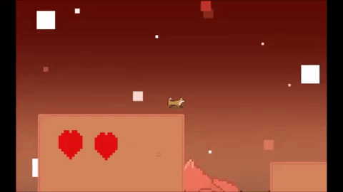

Daniel Soberanis-Chacon
Game Programer, Digital, and Regular Artist
Nefarious Man
“Nefarious Man” is a 2D side-scroller where you play as a dog named Max trying to escape Mars while also trying to defeat the evil Nefarious Man.
- This game was made by three people: Daniel Soberanis-Chacon (Programmer), Tori Collins (Artist), and Jesse Sheeler (Music).
- C# Script heavy game to work with.
- UI displaying the hearts.
- Transitioning between levels without Unity crashing.
- Many of the assets came from Unity through the standard assets folder.
